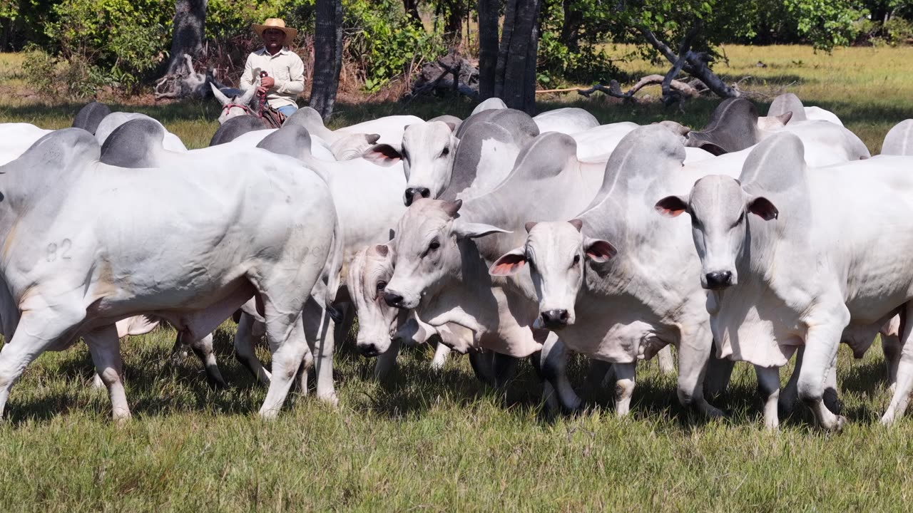
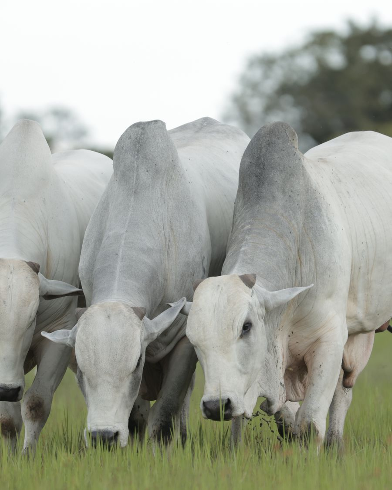
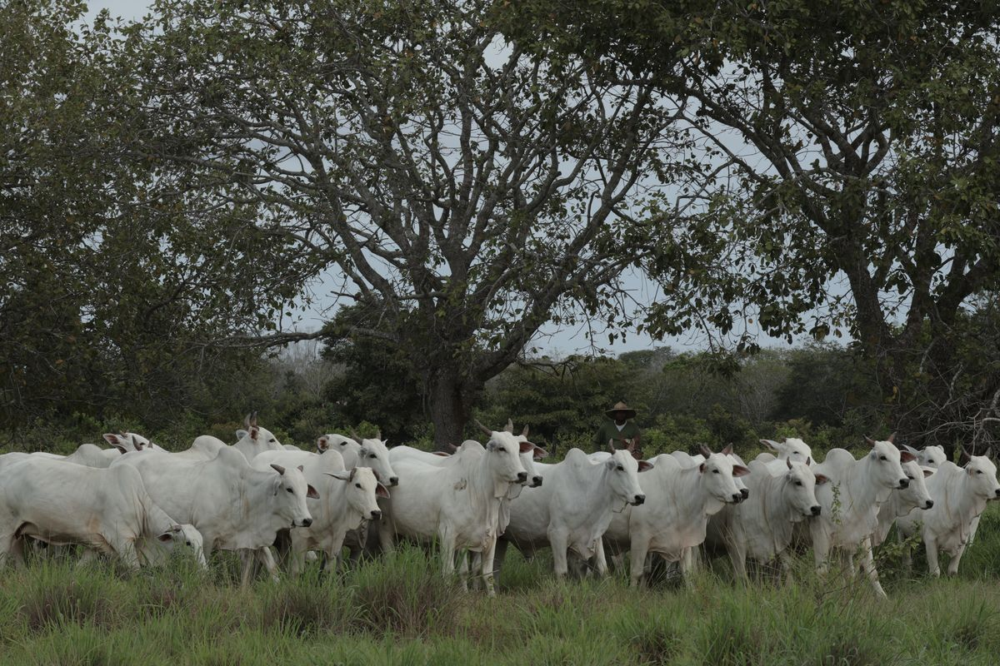
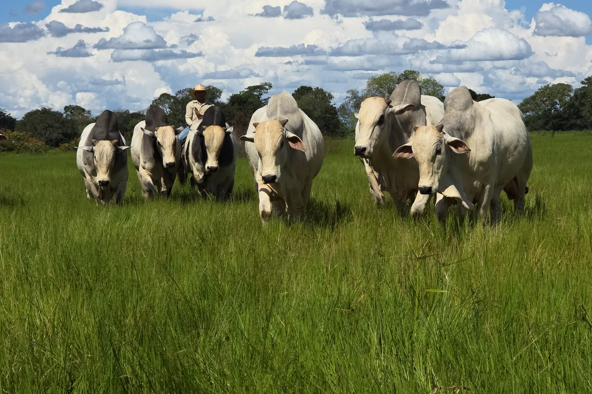
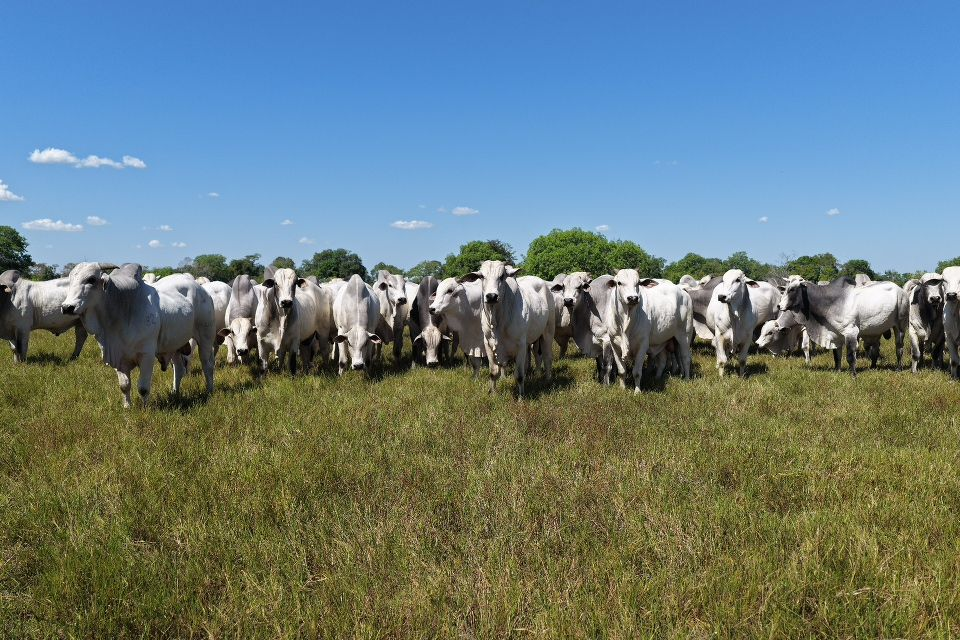

Seleção a pasto
Selecionamos no ambiente em que o animal precisa produzir: a pasto
Feira de Touros Nelore Laçada · 4 e 5 de setembro de 2026 · Estrela Dalva Leilões, Paraíso, TO
Ver catálogo
Nelore selecionado a pasto em Goiás e Tocantins. Eficiência desde 1958
Nossa história

Quem somos
A seleção começou em Quirinópolis, Goiás, com Neusa Guimarães, que contou com o apoio de Fausto Pereira Lima no início desse trabalho. Desde então, segue o mesmo princípio: selecionar animais que dão resultado a pasto.
Hoje, Beto Guimarães está à frente da seleção e da fazenda. Seus filhos Rafael, Lorenzo e Eduarda participam do trabalho e do processo de sucessão, mantendo a continuidade de uma seleção construída geração após geração.
Como selecionamos
Selecionamos no ambiente em que o animal precisa produzir: a pasto
Mais reposição, maior pressão de seleção, buscando um rebanho mais eficiente geração após geração
Animais que reproduzem mais cedo encurtam o ciclo e aumentam o desfrute da fazenda
Buscamos um Nelore funcional e rentável: fertilidade, ganho de peso e padrão racial com equilíbrio
Animais avaliados pelo:
O objetivo não é selecionar um bom animal. É aumentar a frequência de animais bons dentro do rebanho
Buscamos o equilíbrio entre avaliação visual, DEPs e resultado das progênies, para selecionar animais que entreguem resultado a campo.



1958
Quirinópolis, Goiás
Origem da seleção
2003
Pium, Tocantins
Continuidade do trabalho no Tocantins
“O que mais chama atenção é a consistência genética. A cada geração o gado vem mais padronizado e melhor. A genética da Laçada imprime rápido no rebanho.”
Qualquer dúvida, estamos à disposição pelo WhatsApp
Falar no WhatsApp@fazendanelorelacada · Quirinópolis - GO · Pium - TO